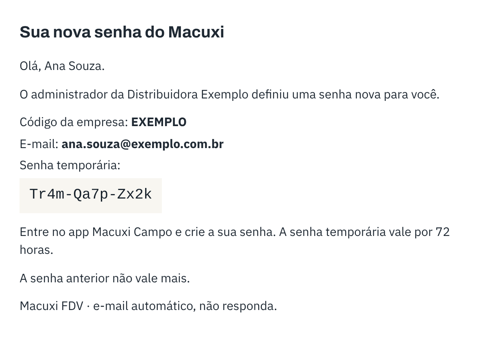
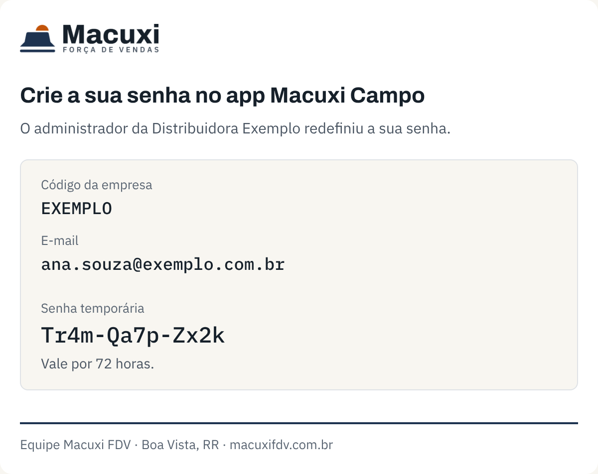
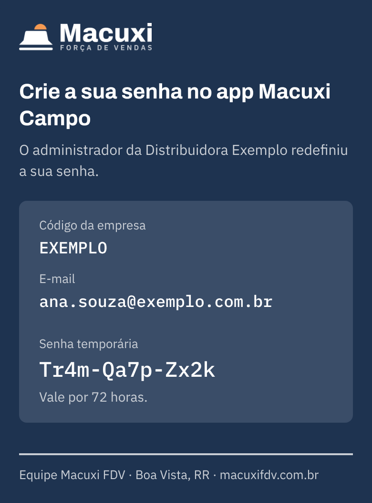

Sem logo e sem as cores da marca; título repete o assunto; "Olá", "A senha anterior não vale mais." e "e-mail automático, não responda." não servem para agir.

Logo do manual (30 px), título = a ação com o destino do perfil, dados num bloco para copiar, validade junto da senha, assinatura do manual com filete Azul noite.

390 px, modo escuro no Azul noite com o logo negativo.
